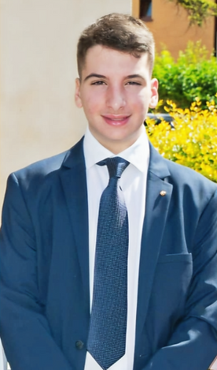
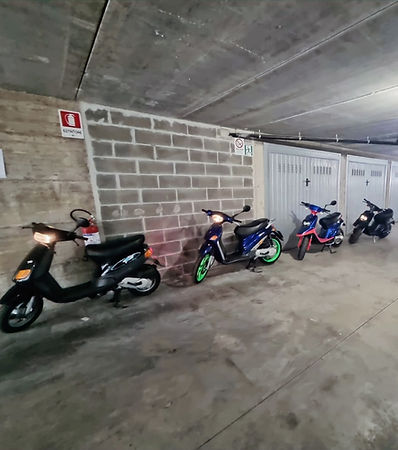
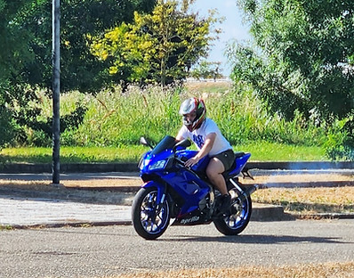
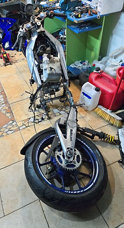
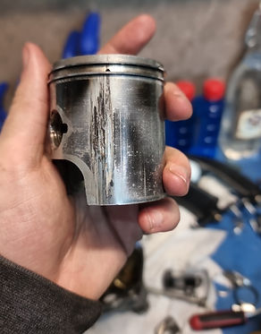

Mi chiamo Roberto Paternò Castello, sono uno studente dell'Istituto Blaise Pascal di Reggio Emilia e frequento l'indirizzo di Informatica. Appassionato di tecnologia fin da piccolo, alimentato dalla curiosità e dalla voglia di imparare.
Sono un programmatore con esperienze in diversi linguaggi come C++, Assembly, HTML , CSS, Java e Javascript, mi impegno per approfondire le mie competenze e il mio sapere del mondo informatico.
Tra le mie passioni spicca quella per il motociclismo, passione ereditata da mio padre il quale amava seguire le corse di Valentino Rossi. Crescendo ho conseguito la prima patente a 14 anni, e in quel periodo mi sono avvicinato al mondo della meccanica. Volevo imparare come poter sistemare da solo il mio scooter, e con il tempo e tanta pratica sono riuscito con successo nell'impresa. Uno dei miei piccoli orgogli è proprio quello di non aver mai dovuto ricorrere all'aiuto di un meccanico, ogni cosa l'ho risolta da solo con le mie mani.
All'età di 16 anni ho conseguito la seconda patente e, per la prima moto, ho voluto scegliere lo stesso modello di moto, una 125, che mio padre aveva alla mia età ma nella versione successiva, più moderna. Tuttavia, a causa delle normative in vigore nel momento della produzione, il mezzo risultava meno potente rispetto alla sua, proprio in quel momento mi posi l'obiettivo di eguagliare o addirittura superare le prestazioni della sua moto.
"Bisogna ricordarsi che la strada non è mai priva di rischi", una frase di uso comune la quale ho sperimentato sulla mia pelle. A seguito dell'incidente la moto si è distrutta: tutto era piegato fuorchè gli ammortizzatori, l'impianto elettrico e le ruote. Era diventata un rottame. Chiunque avrebbe scelto di comprare un'altra moto, ma io ho scelto di riportarla in vita , mi sono rimboccato le maniche e con tanta fatica e pazienza sono riuscito a riparare la moto. Mentre era in fase di restauro scopri che il vecchio proprietario non aveva trattato il motore nella maniera migliore e di conseguenza il motore era danneggiato, ecco scoperto perchè la moto non aveva tutta la potenza che mi aspettavo da quel rinomato motore Rotax.




Tra i miei interessi rientra sicuramente quello di imparare altri linguaggi di programmazione del calibro Python, SQL e C#, per poter implementarli nella risoluzione di problemi più complessi.
Un altro settore che ha la mia attenzione è quello della cybersecurity nell'ambito della sicurezza dei dati e nella gestione delle varie minacce informatiche sempre più presenti oggi.